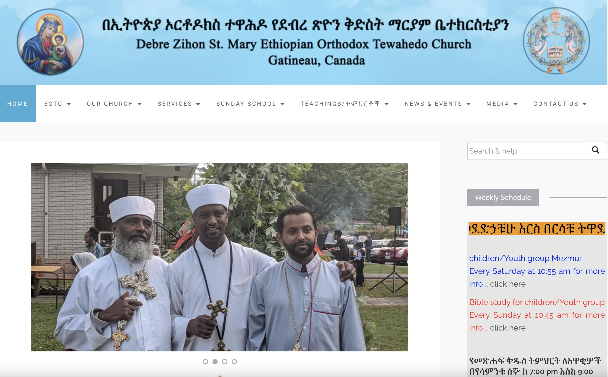
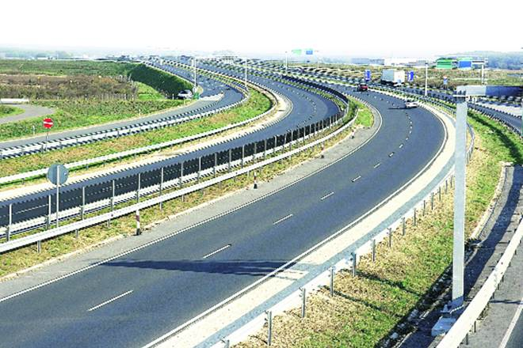
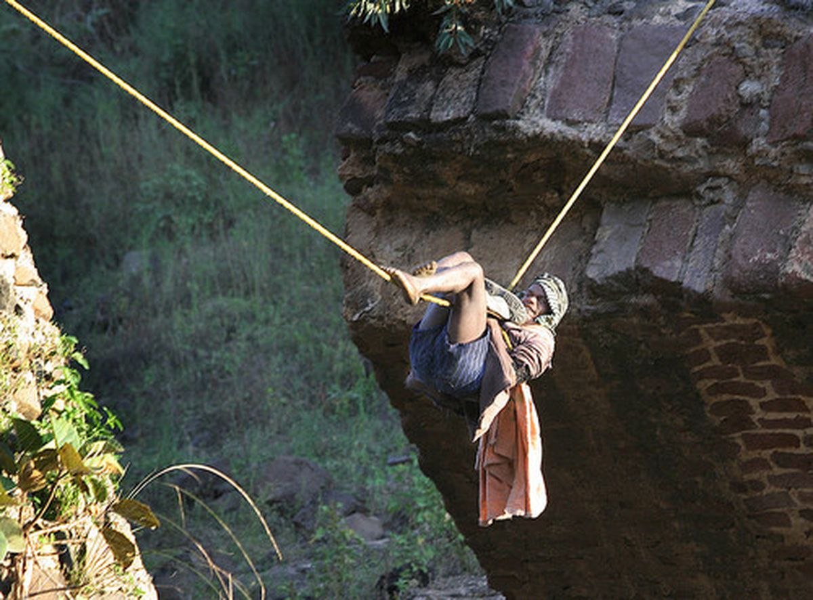

<!DOCTYPE html>
<html lang="en-us"></html>
<head>
    <meta charset="UTF-8">
    <link rel="stylesheet" href="./assets/css/style.css">
    <title>My Portfolio</title>
</head>
<body>
  <!-- Header section Structure starts here -->
  <header>
    <h1>
          <a  href="index.html" class="name">Thomas Habtemariam</a>
    </h1>
    <nav>
      <ul>
          <li>
            <a href="#About-Me" class="nav">About</a>
          </li>
          <li>
            <a href="#Projects"class="nav">Portfolio</a>
          </li>
          <li>
            <a href="#contact-me"class="nav">Contact Me</a>
          </li>
          <li>
            <a href="./assets/resume/Resume for Carleton 2020 update.pdf"class="nav">Resume</a>
          </li>
      </ul>
    </nav>
  </header>
  <!-- Header section Structure ends here -->

  <!-- Hero/Avatar Structue starts here -->

  <section class="hero">
        <div>
          
        </div>
  </section>
  <section>
        <div class="sub-title">
          <h2>"A Full-Stack Web Developer to be"</h2>
        </div>
  </section>
  <!-- Hero/Avatar Structue ends here -->


  <!-- About-me section Structure starts here -->
  <section id="About-Me" class="about">
    <div class="flex-row">
        <h1 class="section-title border-1">About Me</h1>
    </div>
    <div class="flex-container">
        <p class="flex-row">
            I  worked and studied in Civil Engineering as a high-rated graduate in 2008. Up until 2015, I have participated in design of multi-span structral 
            bridges and also worked on a construction of  Asphalt pavements in diffrent projects in Easter-Africa and Europe. Moving into another part of the world in 2016 gave me a great opportunity to 
            join to another era in computer science leading me to work in diffrent organizations in the capital of Canada specially in web developing projects using diffrent CMS. 
            <br>
            <br>
            I am now a Tech. support assistant, website administrator and Social Secretary in a diplomatic office located in Ottawa. I've a passion for computer science, information technology and on 
            diffrent technical aspects of modern technology.
           <br>
           <br>
            I  have a self-confident and can interact with any kind of poeple as I had so may great opportunities to work with teams in technical, managiarial 
            and diplomatic level. 
            <br>
            <br>
            Well being said about of proffessionalism, I have a great tendency of leaning new expriances from diffrent aspects of fields; i.e. I have had a great 
            expriance to play with numbers like accounting MGT and commercial income Taxe amalysis , transportaion bussines, photography and video editing. As matter of fact, 
            photography is now one of my part-time job that I take seroiusly.
        </p>
    </div>
  </section>
    <!-- About-me section Structure ends here -->

    <!-- Portfolio section Structure starts here -->
  <section id="Projects">
    <div>
        <h1 class="section-title border-2">Projects</h1>
        </div>
        <article class="flex-container">
          <div>
              <figure class="top-fig">
                <a href="https://www.stmaryeotc.org"></a>
                <figcaption>
                <div class="fig-title">www.stmaryeotc.org</div>
                <div class="ig-subtitle">Wordpress CMS</div>
                </figcaption>
              </figure>
          </div>
        <div class="row">
          <div class="column">
            <figure>
                <a href="https://www.bdhcottawa.ca"></a>
              <figcaption >
              <div class="fig-title">www.bdchottawa.ca</div>
              <div class="fig-subtitle">Goomla CMS</div>
              </figcaption>
            </figure>
        </div>

        <div class="column"></divclass>
            <figure> 
                <a href="https://tomhabt.github.io/Horiseon-Marketing/"></a>
              <figcaption >
              <div class="fig-title">Run Buddy</div>
              <div class="fig-subtitle">HTML/CSS</div>
              </figcaption>
            </figure>
        </div>
        </div>  
        <div class="row">
             <div class="column">
          <figure>
        <a href="https://www.google.com/maps/place/Addis+-+Adama+Expy,+Ethiopia/@8.6839165,39.0697775,17z/data=!3m1!4b1!4m5!3m4!1s0x164b21eac17d48f3:0xdbdab7446a546a71!8m2!3d8.6839165!4d39.0719662"></a>
        <figcaption >
        <div class="fig-title">Addis-Adama Expressway (Ethiopia)</div>
        <div class="fig-subtitle">Highway Engineering</div>
        </figcaption>
      </figure>
  </div>

  <div class="column"></divclass>
      <figure> 
        <a href="/"></a>
        <figcaption >
        <div class="fig-title">Hareto-Wayu Bridge design (Ethiopia)</div>
        <div class="subtitle-top">Structural Analysis</div>
        </figcaption>
      </figure>
  </div>

</div> 
 </article>           
</body>
<!-- Portfolio section Structure ends here -->

<!--Footer structure starts here-->
<footer>
  <section id="contact-me">
    <div>
      <h1 class="section-title border-3">Contact Me</h1>
      </div>
      <div class="flex-container">
        <nav>
          <ul>
            <li>
              <a href="callto:+16136008669" class="nav">+1(613) 600.8669</a>
            </li>
            <li>
              <a href="mailto:thomas.habtemariam@gmail.com"class="nav">thomas.habtemariam@gmail.com</a>
            </li>
            <li>
              <a href="https://www.github.com"class="nav">GitHub</a>
            </li>
            <li>
              <a href="https://twitter.com/@ThomasHabtemar2"class="nav">Twitter</a>
               </li>
               <li>
                <a href="https://www.linkedin.com/feed/?trk=guest_homepage-basic_nav-header-signin"class="nav">
               Linkedin
               </a>
            </li>
          </ul>
        </nav>
      </div>
  </section>
</footer>
</html>
    <!-- Footer section Structure starts here -->
  


